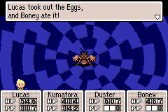

Summary
Mother 3 is third and final installment in the Mother series. It was supposed to be release on the Nintendo 64 but ended up on the Game Boy Advanced and released on April 20th, 2006. Mother 3 was a success when released selling 200,000 copies within the first week of release. It was only released in japan and never got to be played globally but there has been many fan translations for the game. It was also released on the Wii U but yet again only in japan.
Gameplay/Story

Mother 3 has a really great story that I think everyone you have the chance to play and it's also full of spoliers so i'll be shortly summarizing
what story is about without any spoliers. Mother 3 is about a boy named Lucas who with him and his friends have save Nowhere island
from Porky and his arm. The takes place many years after Eartbound or Mother 2 and under the island resides a dragon who has been put to
sleep by the acestors of the Magypsies who are a tribe that protect the Seven Needles. The Seven Needles
are the things that keep the dragon sealed. Once they are pulled out depending on the persons heart the dragon will either destroy the world or make peace with the
people. Lucas and Porky are at race to see who can pull the needle first and control what the dragon actions are. And that's the main plot of the game, now lets talk
about the gameplay.

Mother 3 still retains the basic RPG format just like the other games in the series. Just like Earthbound Mother 3 has the PSI system as well
were Lucas and other characters can use healing and attack moves. Some other small changes were made like you can actual run which hasn't been in placed since the first game and now bosses also
have PSI abillites which forces the player to use more strategy un like in previous game where Jeffs rockets would one shot bossess. Graphics are nice and colourfull better than
the last game and for the first time the main character Lucas actually talks which makes him the only protagonist in to be able to in the franchise. The game made one last change which
was adding chapters to build up story. In each chapter you get to play as different characters who have different stories from Lucas and you can use these characters in fight's as well. Overrall Mother 3
is one of the best video games of all time along with a story and soundtrack that makes the game more enjoyable and fun to play throught.